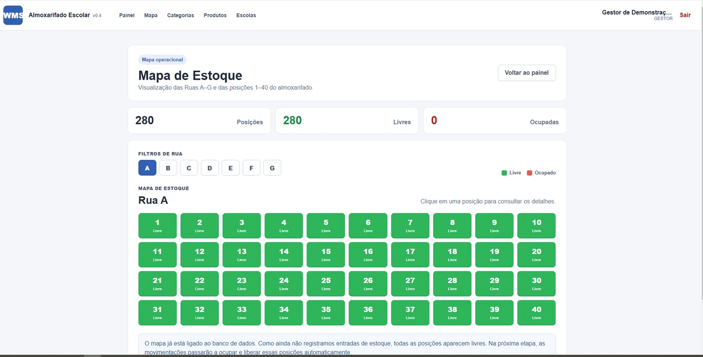
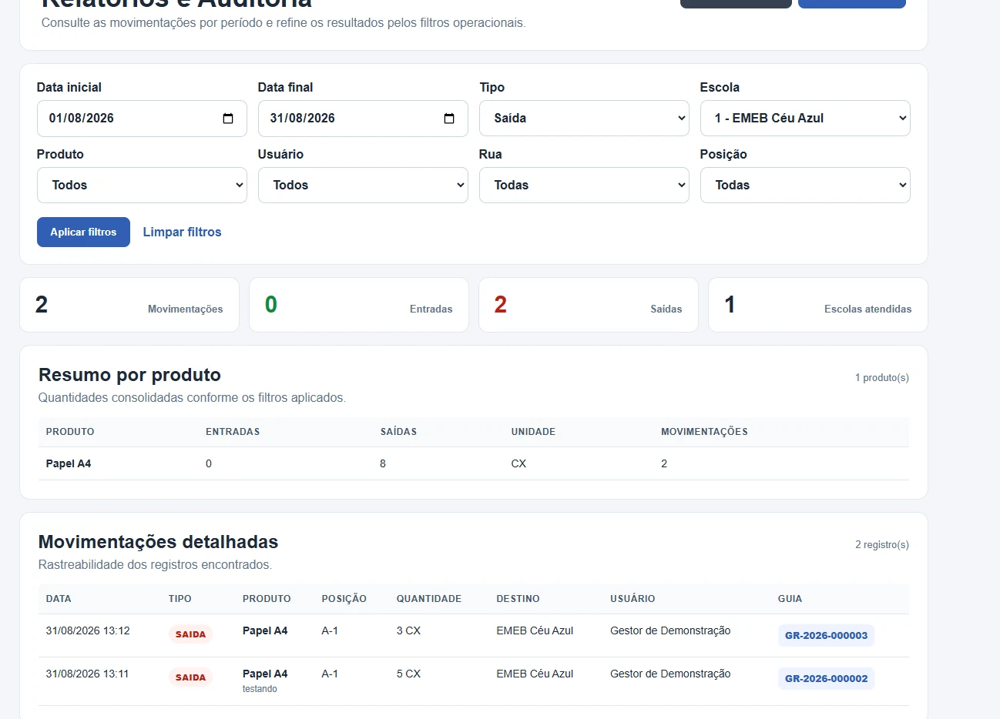
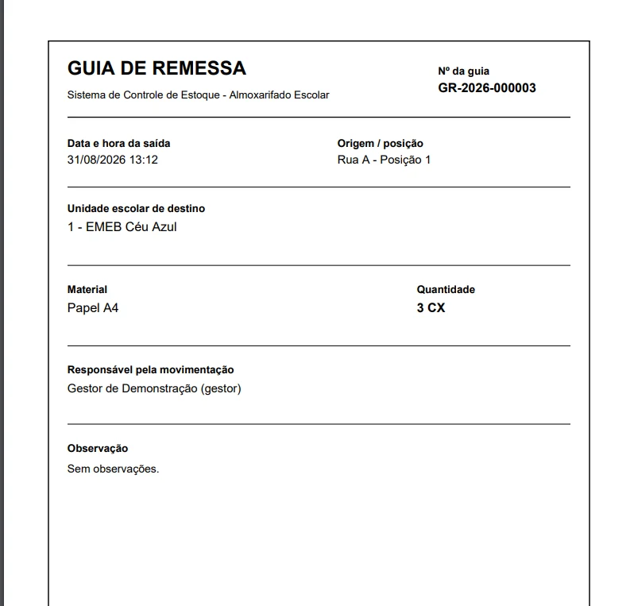

Acesso por perfil
Autenticação com perfis de Gestor e Operador e recursos adequados a cada função.
Uma plataforma web para centralizar materiais, localizar posições físicas, registrar entradas e saídas e apoiar a prestação de contas das unidades escolares.

O WMS foi concebido para substituir controles manuais e planilhas estáticas por uma solução web capaz de acompanhar saldos, movimentações e distribuição de materiais em um almoxarifado central escolar.
O principal diferencial é a Matriz Visual de Estoque: o galpão é representado por Ruas A a G e posições 1 a 40, permitindo localizar rapidamente espaços livres e ocupados.
Visualizar onde cada material está armazenado.
Registrar entradas e saídas com atualização automática.
Manter histórico, destino, usuário e guia de remessa.
Filtrar e exportar relatórios para prestação de contas.
As principais jornadas previstas no projeto já estão integradas em uma única aplicação.
Autenticação com perfis de Gestor e Operador e recursos adequados a cada função.
Categorias, produtos e unidades escolares organizados em uma base centralizada.
280 posições organizadas em sete ruas, com indicação visual de livre e ocupado.
Movimentações atualizam o estoque, validam saldo e registram o responsável pela operação.
Saídas geram documento em PDF com material, quantidade, destino, posição e responsável.
Filtros por período, tipo, escola, produto, usuário e posição, com CSV e impressão em PDF.
As telas abaixo são capturas reais da aplicação implementada.
O operador escolhe a rua, identifica a posição e realiza a movimentação diretamente no ponto correspondente do mapa.
O perfil Gestor acompanha entradas e saídas, aplica filtros e exporta dados consolidados para apoiar auditorias.

Cada saída pode gerar uma guia formal com identificação do material, quantidade, escola de destino, posição de origem e responsável.

A solução separa apresentação, regras da aplicação e persistência de dados.
O usuário acessa o WMS com seu perfil autorizado.
Seleciona a rua e identifica visualmente o espaço desejado.
Informa produto, quantidade e, na saída, a escola de destino.
O saldo e o status visual da posição são atualizados automaticamente.
Histórico, guia de remessa e relatórios ficam disponíveis para consulta.
Curso de Tecnologia em Análise e Desenvolvimento de Sistemas — Centro Universitário Senac.
A aplicação está publicada em nuvem e pode ser acessada pelo navegador. As operações realizadas utilizam uma base compartilhada de demonstração.